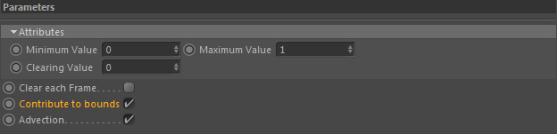
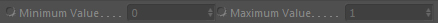
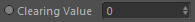

Parameters

Parameters::Attributes
Minimum Value

The minimum floating point value this channel can hold.
Example (Gaseous Fluid Simulation):
If a channel is used to store smoke densities, temperatures and similar the minimum value of 0.0 means the cell has no smoke, temperature etc. in it. So it is the perfect minimum value for this task.
If a channel is used to store smoke densities, temperatures and similar the minimum value of 0.0 means the cell has no smoke, temperature etc. in it. So it is the perfect minimum value for this task.
Example (Viscous liquid Simulation):
If a channel is used to store viscosity values the minimum value may be higher than 0.0. If I wanted to not let the viscosity get lower than 0.1, I set it as minimum value (and clearing value).
If a channel is used to store viscosity values the minimum value may be higher than 0.0. If I wanted to not let the viscosity get lower than 0.1, I set it as minimum value (and clearing value).
Maximum Value
The maximum floating point value this channel can hold.
Example (Gaseous Fluid Simulation):
If a channel is used to store smoke densities the maximum value of 1.0 means the cell is full of smoke.
So it is the perfect (most convenient and straight forward) maximum value for this task.
For a temperature grid you would probably set the value to something like 5000 (as the whole framwork operates in SI units the unit for temperature is kelvin).
For a temperature grid you would probably set the value to something like 5000 (as the whole framwork operates in SI units the unit for temperature is kelvin).
Example (Viscous liquid Simulation):
If a channel is used to store viscosity values the maximum value may be higher than 1.0. If I wanted to allow the viscosity to be as high as 10000, I set it as maximum value.
No cell will then have a value higher than 10000.
Clearing Value

Whenever you activate "Clear each Frame" or the grid is cleared by the framework, the whole grid and consequently all grid cells will be initialised with the clearing value.
Clear each Frame
Clears all data in the 3d grid at each frame, initialising it with the Clearing Value.
Contribute to bounds
Defines if the content of this grid channel is taken into account by the adaptive container bounds in fluid simulations.
Advection
Turns on/off the advection memory of the grid.
If you are using a GOP::Advection for this channel you need to switch on this option
so (grid based) advection can take place.
Otherwise this option could be turned off and it will reduce the memory consumption of this channel by 50%.
Otherwise this option could be turned off and it will reduce the memory consumption of this channel by 50%.